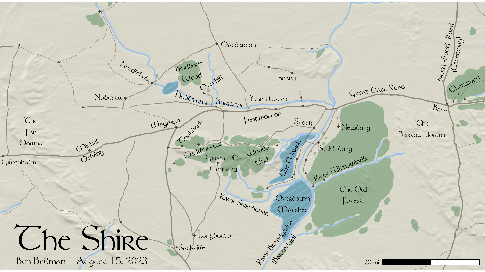

Mapping The Shire With ggplot2
My dad is a massive Tolkien fan, and when I stumbled upon this incredible R blog by Andrew Heiss showcasing GIS with the sf package and Middle Earth data, I knew I needed to make him a custom map for his birthday. I’m not as big a fan as him, but I love the LOTR books and movies, and we share a particular fondness for the Shire: him because of Anglophile agrarian idealism, and me for the rich bounty of geographic world-building that Tolkien shoveled into it.
I know a lot of geographers swear by tmap, but my favorite viz tool will always be ggplot2, even for mapping. The wealth of companion packages that have been built for it is just so powerful. I also love the ability to hard-code label placements within the coordinate space of the data/chart, something I leaned on heavily for this project.
My objective was to create a classic Tolkien-style map as a standard 2560-by-1440 pixel desktop background. I wanted it to have that iconic Peter Jackson film style and leverage some 3D effects to highlight topography. I also wanted it to have enough detail to take you on a journey in your imagination but still be a usable background, letting your icons appear effortlessly and feel natural. Skip to the end if you want to see the final product and download to use yourself!
Setting up
First things first, I needed the right font for this map to really work. I found this lovely design for free download and never looked back. It doesn’t support accents, which is just fine by me because text encoding is a private hell, and ASCII helps avoid pain and suffering where possible. Handling custom fonts in R varies by platforms and preferences, but as a current Windows user, I love extrafont for importing .ttf files. This should work regardless of platform:
library(extrafont)
library(here) #consistent local paths, check it out
# register downloaded Tolkien.tff with extrafont package
# use your own folder path
font_import(paths = here("posts", "shire-map", "data"))
# import font data into extrafont library within R
loadfonts()
# fonts loaded this way are availble for future sessions
# just load extrafont with this verison of RNow that the font is installed, start a fresh R session to use it. Let’s load all the necessary packages and set up a couple handy functions for later:
library(tidyverse)
library(stringi)
library(sf)
library(terra)
library(ggspatial)
library(ggpattern)
library(here)
library(extrafont)
# keep colors consistent
clr_green <- "#035711"
clr_blue <- "#9CC2EA"
clr_yellow <- "#fffce3"
# quick conversion
miles_to_meters <- function(x) x * 1609.344
# ensure consistent spatial data import
load_me_data <- function(path) {
# load shapefile
st_read(path, as_tibble = T, options = "ENCODING=ISO-8859-1") %>%
# drop accents in placenames (font doesn't have them)
rename_with(.fn = str_to_lower) %>%
mutate(NAME = stri_trans_general(name, "Latin-ASCII")) %>%
# re-project to consistent coordinate system
st_transform(32631)
}Vector data
Now we can load the actual data, created by the Middle Earth Digital Elevation Model team (download the vector data here and the elevation model here. Their original goal was to create detailed maps of all of Middle Earth for table top gaming, which posed some challenges for my smaller scale vision. These are the files I ended up using in the final draft:
# load middle earth vector files
me_forests <- load_me_data(here("posts", "shire-map", "data", "ME-GIS-master", "Forests.shp"))
me_rivers <- load_me_data(here("posts", "shire-map", "data", "ME-GIS-master", "Rivers.shp"))
me_towns <- load_me_data(here("posts", "shire-map", "data", "ME-GIS-master", "Towns.shp"))
me_lakes <- load_me_data(here("posts", "shire-map", "data", "ME-GIS-master", "Lakes.shp"))
me_wetlands <- load_me_data(here("posts", "shire-map", "data", "ME-GIS-master", "Wetlands02.shp"))
me_roads <- load_me_data(here("posts", "shire-map", "data", "ME-GIS-master", "Roads.shp"))Raster data
Now we load and process the elevation raster data. This next part uses the terra package, which I finally started using for this project! After loading, I make sure it has the same coordinate system as the vector files.
# load digital elevation model
me_dem <- rast(here("posts", "shire-map", "data", "DEM", "10K.jpg"))
# match coordinate system to rest of data
crs(me_dem) <- "epsg:32631"I found it easier to work with a small subset of elevation data, since I was only interested in mapping the Shire.
# grab hobbiton to anchor map extent
hobbiton <- me_towns %>%
filter(name == "Hobbiton") %>%
mutate(geometry_x = map_dbl(geometry, ~as.numeric(.)[1]),
geometry_y = map_dbl(geometry, ~as.numeric(.)[2]))
# create bounding box to select elevation data
shire_bb <- st_bbox(c(xmin = hobbiton$geometry_x - miles_to_meters(50),
xmax = hobbiton$geometry_x + miles_to_meters(70),
ymax = hobbiton$geometry_y + miles_to_meters(50),
ymin = hobbiton$geometry_y - miles_to_meters(50)),
crs = st_crs(32631))
# limit DEM to shire extent
shire_dem <- crop(me_dem, ext(shire_bb))After some experiments, I realized that the original DEM didn’t have a realistic feel when zoomed to the Shire’s extent. When translated to three dimensions, the knotted hill country where the Four Farthings meet morphed into towering spires and sheer cliffs, and the flat plains were lumpy and grid-like. To help the landscape resemble natural hill slopes, I applied a kernel density function to calculate weighted averages of elevation, created a smoothed elevation layer.
# local weighted mean, Gaussian kernel with 200m radius
smooth <- focal(shire_dem, w = focalMat(shire_dem, d = 200, type = "Gauss"), fun = "mean")Shading the hill slopes
I used this data to wrap my head around the rayshader page for the first time, but ultimately decided that I could get a nice 3D effect with ggplot2 and also leverage its sharp text and polygon displays. The terra package has built-in tools for computing basic topographic variables for elevation surfaces, and a function to compute shade for a given cell in a DEM. In order to simulate shade values from light sources, we need to compute slope and aspect at each cell with the smoothed elevation.
# calculate terrain surface for rayshading the map shadow effect
sl <- terrain(smooth, "slope", unit = "radians")
asp <- terrain(smooth, "aspect", unit = "radians")
# shade from different sun angles and create composite shade values
hillmulti <- map(
# angles of light source
c(270, 15, 60, 330),
# lambda function to get shade generated at each cell
\(dir) shade(sl, asp, angle = 45, direction = dir, normalize=TRUE)
) %>%
rast() %>%
sum()
# convert raster to df for ggplot
hillmultidf <- as.data.frame(hillmulti, xy = TRUE)Map annotations
Finally, I hard-coded the map annotations as data frames with annotations built in, and I was meticulous when manually entering and choosing these values. I don’t think it’s wise to ever trust automatic label placement when mapping or adding text to charts. Remember your audience, medium (physical document, size, colors, etc.), and make purposeful choices on how/where to label your visuals based on those parameters.
# settlements
towns_anno <- tibble(
name = c("Hobbiton", "Bywater", "Bree", "Stock", "Michel\nDelving", "Scary",
"Sackville", "Longbottom", "Waymeet", "Needlehole", "Nobottle", "Overhill",
"Frogmorton", "Bucklebury", "Newbury", "Tuckburrow", "Tookbank", "Greenholm",
"Oatbarton"),
x = c(512700, 526000, 596000, 550500, 479517.2, 545000,
513500, 522000, 505000, 495000, 486000, 520000,
537000, 561000, 568000, 517000, 513000, 456000,
529000),
y = c(1047200, 1045500, 1043500, 1039200, 1029736, 1054000,
997500, 1001500, 1039000, 1056000, 1047500, 1052300,
1041000, 1030500, 1037500, 1030000, 1036000, 1026000,
1065068),
angle = c(-15, -7, -16, -6, 25, 0,
0, 0, 12, -30, 0, 30,
12, 0, 0, 20, 45, 0,
0)
)
# rivers
rivers_anno <- tibble(
name = c("The Water", "River Brandywine\n(Baranduin)", "River Withywindle", "River Shirebourn"),
x = c(539000, 542500, 563000, 531000),
y = c(1047000, 998000, 1024000, 1011700),
angle = c(0, 52, 22, -20)
)
# woods and marshes
woods_anno <- tibble(
name = c("Woody\nEnd", "The Marish", "Overbourn\nMarshes", "Chetwood",
"Bindbode\nWood", "The Old\nForest", "Green Hills\nCountry"),
x = c(536000, 546000, 547000, 604000,
513000, 567000, 524000),
y = c(1028000, 1027000, 1012000, 1052000,
1056000, 1015000, 1025500),
angle = c(20, 65, 0, 25,
15, 0, 0)
)
# roads
roads_anno <- tibble(
name = c("Great East Road", "North-South Road\n(Greenway)"),
x = c(575000, 599500),
y = c(1050000, 1062000),
angle = c(8, 79)
)
# hills
hills_anno <- tibble(
name = c("The\nBarrow-downs", "The\nFar\nDowns"),
x = c(590000, 460000),
y = c(1037000, 1036000),
angle = c(0, 0)
)
# combine map features
anno_df <- bind_rows(list(towns_anno, rivers_anno,woods_anno, roads_anno, hills_anno))
# title
title <- tibble(
txt = c("The Shire"),
x = c(477000),
y = c(1000500)
)
# cartographer and date
captions <- tibble(
txt = c("Ben Bellman August 15, 2023"),
x = c(477000),
y = c(993000)
)Final map code
Finally, here’s the code that generated the final product. I’m thrilled with how it looks, and think I did a better job than I ever would with any of the point-and-click GIS software products out there. Preserving workflows with code is always worth the effort!
ggplot() +
# start with elevation rayshade
geom_raster(data = hillmultidf,
aes(x, y, fill = sum),
show.legend = FALSE,
alpha = 0.5) +
scale_fill_distiller(palette = "Greys") +
# physical geography
geom_sf(data = me_forests, linewidth = 0, fill = clr_green, alpha = 0.3) +
geom_sf(data = me_rivers, linewidth = 0.75, color = clr_blue) +
geom_sf(data = me_lakes, color = clr_blue, fill = clr_blue) +
geom_sf_pattern(data = me_wetlands, pattern = "stripe", pattern_density = 0.95, pattern_spacing = 0.02,
pattern_color = clr_blue, pattern_fill = clr_green, fill = clr_blue, color = clr_blue, pattern_alpha = 0.25) +
# roads
geom_sf(data = filter(me_roads, type == "PRIMARY"), linewidth = 0.7, color = "#483C32", alpha = 0.5) +
geom_sf(data = filter(me_roads, type == "SECONDARY"), linewidth = 0.4, color = "#483C32", alpha = 0.5) +
geom_sf(data = filter(me_roads, type == "TERTIARY"), linewidth = 0.2, color = "#483C32", alpha = 0.5) +
# settlements
geom_sf(data = filter(me_towns, type == "Town"), size = 1.5, pch = 18, color = "#483C32") +
geom_sf(data = filter(me_towns, type == "Village"), size = 0.5, color = "#483C32") +
# map annotations
geom_text(
data = anno_df,
aes(x = x, y = y, label = name, angle = angle),
family = "Tolkien", size = 3.5, color = "black"
) +
# title
geom_text(
data = title,
aes(x = x, y = y, label = txt),
family = "Tolkien", size = 15
) +
# captions
geom_text(
data = captions,
aes(x = x, y = y, label = txt),
family = "Tolkien", size = 4.5
) +
# scale bar
annotation_scale(location = "br", bar_cols = c("black", "white"),
text_family = "Tolkien",
unit_category = "imperial") +
# base map extent on hobbiton
coord_sf( # figuring out this extent was trial and error
xlim = c(hobbiton$geometry_x - miles_to_meters(38),
hobbiton$geometry_x + miles_to_meters(53)),
ylim = c(hobbiton$geometry_y - miles_to_meters(32),
hobbiton$geometry_y + miles_to_meters(18.625)),
crs = 32631
) +
# map vibes
theme_void() +
theme(
panel.background = element_rect(fill = clr_yellow, color = NA),
legend.position = "none"
) -> shire_map
# save the map, specify size by pixels
ggsave(plot = shire_map, filename = here("posts", "shire-map", "shire_map_desktop.png"), width = 2560, height = 1440, units = "px")